Театр старинной музыки Московского государственного университета имени М. В. Ломоносова основан в 1980 году сотрудником Химического факультета МГУ кандидатом химических наук Валерием Абрамовичем Крейсбергом, его бессменным художественным руководителем. За 30 с лишним лет несколько сот студентов, аспирантов и молодых ученых оставили свой творческий след в истории Театра. Сейчас в труппе около 60 человек — солисты, хор и оркестр.
В репертуаре театра — музыкальные шедевры XVI – XIX веков композиторов очень известных (Перселл, Гендель, Бах, Вивальди, Глюк, Моцарт, Оффенбах, Бортнянский), известных (Палестрина, Векки, Монтеверди, Дауленд, Березовский), и известных в узких кругах (Кампра, Гретри, Дуранте, Мартин-и-Солер, Пашкевич, Сарти). Большинство произведений из репертуара Театра исполняются редко или не исполнялись совсем, по крайней мере, в нашей стране. Партитуры некоторых сочинений приходилось искать за границей.
В последние годы Театр обращается и к сочинениям XX века — произведениям Гречанинова, Гершвина, Пуленка, Шнитке, Гаврилина.
Театр дает музыкальные спектакли и концерты. Музыкальные спектакли Театра — это веселые представления, где разговорные сцены перемежаются с хоровой, оркестровой музыкой или ариями солистов. В результате получается спектакль, где гармонично уживаются и опера, и драма, то есть достигается то, чего зачастую не хватает современным оперным постановкам. Открывая современному зрителю и слушателю мир старинной музыки, Театр не сковывает себя канонами академизма и аутентизма. Всепроникающая ирония, творческое реконструирование либретто, явное влияние современной живой культуры (иногда даже с вкраплениями рок-музыки) превращают старинные оперы в увлекательные музыкальные спектакли. Сцены из них можно увидеть на нашем сайте.
В своих концертах Театр исполняет, в основном, духовную музыку — произведения Баха (“Magnificat”, Месса си минор), Вивальди (“Credo”, “Magnificat” и “Stabat Mater”), Перголези (“Stabat Mater”), Глюка (“De Profundis”), Моцарта (“Коронационная месса” и “Торжественная вечерня проповедника”), Гайдна (“Te Deum”, ”Salve Regina” и ”Schöpfungsmesse”), Доницетти (“Miserere” и “Ave Maria”), Россини (”Stabat Mater”), Гречанинова (“Демественная литургия”), концерты Бортнянского, Березовского, Дегтярёва.
Театр с большим успехом выступал на сценах Хельсинки, Праги, Вильнюса, Таллинна, Киева, а также Владимира и других городов России, является многократным лауреатом московского фестиваля «Фестос» среди музыкальных театров.
Театральный сезон в нашем Театре начинается с началом учебного года — в сентябре, заканчивается в июне. Репетиции театра проходят в 303 классе ДК МГУ на Ленинских горах.